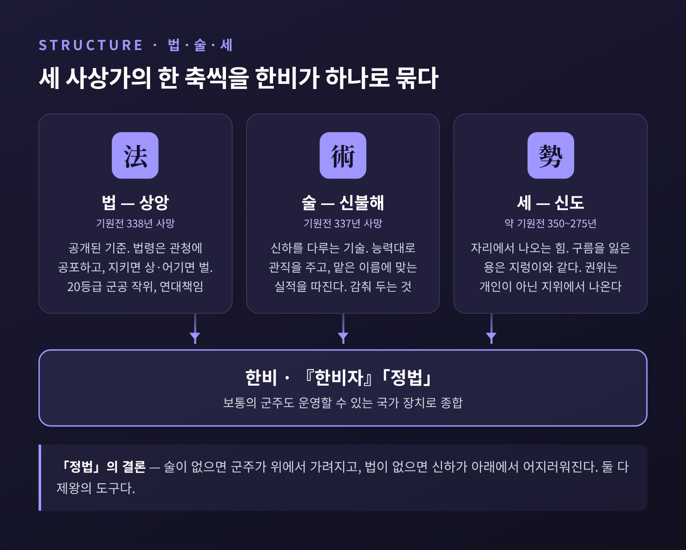

한비자의 법·술·세 — 이익을 좇는 인간을 다스리려 한 통치 설계
오늘은 한비자의 법·술·세에 대해 이야기해 보려 합니다. 전국시대 끝자락, 한 사상가가 어떻게 앞선 세 사람의 생각을 하나의 통치 설계로 묶었는지 따라가 봅니다. 그 설계가 진(秦)의 통일과 몰락, 그리고 오늘의 법치 논의에 무엇을 남겼는지도 함께 살펴보겠습니다.
먼저 핵심만 요약하면 이렇습니다.
- 한비는 상앙의 법, 신불해의 술, 신도의 세를 종합해 '보통의 군주도 굴릴 수 있는 국가 장치'를 구상했습니다.
- 그 바탕에는 사람은 대체로 자기 이익을 좇고, 교육으로는 잘 바뀌지 않는다는 냉정한 인간관이 있습니다.
- 진은 이 사상으로 천하를 통일했지만 약 15년 만에 무너졌고, 그 뒤 법가는 비난받으면서도 제도 속에 오래 살아남았습니다.
■ 망해 가는 나라의 왕족이 쓴 책
한비는 기원전 280년 무렵 태어나 기원전 233년에 세상을 떠났습니다. 출생 연도는 추정치입니다. 그는 전국시대 말 약소국이던 한(韓)나라의 왕족이었습니다. 서쪽에는 거대한 진나라가 버티고 있었습니다.
말을 더듬었다고 전해집니다. 그래서 말 대신 글로 개혁안을 올렸지만, 한나라 조정은 받아들이지 않았습니다. 정작 그 글에 감탄한 사람은 적국의 왕이었습니다. 진왕은 저자를 만날 수 있다면 죽어도 여한이 없겠다고 했다고 합니다.
결말은 비극적입니다. 진군이 국경에 다가오자 한나라는 한비를 사신으로 보냈습니다. 그는 한나라를 치지 말라고 설득했습니다. 그러나 순자 문하의 동문이자 진의 재상이던 이사(李斯)가 그를 모함했고, 한비는 옥중에서 독약을 받아 생을 마쳤습니다. 다만 스탠퍼드 철학 백과(SEP)는 이 죽음을 '전해진다'는 신중한 어조로 적고 있습니다.
그가 남긴 『한비자』는 55편이 거의 온전히 전합니다. 설득당하지 못한 군주에게 보낸 긴 답장 같은 책입니다.
■ 법·술·세, 세 사람의 생각을 한 틀로
한비의 사상은 흔히 '집대성'이라 불립니다. 앞선 세 사상가가 각각 한 축씩을 세웠기 때문입니다.
법(法) — 상앙(기원전 338년 사망) 법은 누구에게나 똑같이 적용되는 공개된 기준입니다. 상앙은 진나라에서 세습 귀족 질서 대신 군공에 따른 20등급 작위를 세웠습니다. 이웃과 친족에게 연대책임을 지우고, 농사와 전쟁을 나라의 근본으로 삼았습니다. 『한비자』 「정법(定法)」은 법을 이렇게 정의합니다. 법령은 관청에 공포되어 있고, 형벌은 반드시 시행된다는 믿음이 백성 마음에 새겨져 있으며, 법을 지키면 상을 주고 어기면 벌하는 것.
술(術) — 신불해(기원전 337년 사망) 술은 군주가 신하를 다루는 기술입니다. 「정법」에 따르면 능력에 따라 관직을 주고, 맡은 이름에 맞는 실적을 따지며, 신하의 능력을 평가하는 것입니다. 법이 드러내야 하는 것이라면, 술은 군주의 가슴속에 감춰 두는 것입니다.
세(勢) — 신도(약 기원전 350~275년) 세는 사람이 아니라 자리에서 나오는 힘입니다. 신도는 구름을 잃은 용과 뱀은 지렁이나 개미와 다를 바 없다고 비유했습니다. 군주가 강한 것은 그가 뛰어나서가 아니라 그 자리에 앉아 있기 때문이라는 뜻입니다.

한비는 이 셋을 단순히 합치지 않았습니다. 「정법」에서 그는 앞사람들의 빈틈을 짚습니다. 신불해는 법령을 하나로 통일하지 못해 간사함이 늘었습니다. 상앙은 간신을 가려낼 술이 없어, 나라가 부강해질수록 신하만 살찌웠습니다. 그래서 결론은 이렇습니다. 군주에게 술이 없으면 위에서 가려지고, 신하에게 법이 없으면 아래가 어지러워진다. 둘 중 하나도 없어서는 안 되며, 모두 제왕의 도구라는 것입니다.
■ 왜 '보통의 군주'인가 — 「난세」의 문제의식
이 대목이 한비 사상의 가장 흥미로운 지점이라고 생각합니다. 「난세(難勢)」편에서 그는 세에 대한 반론에 답합니다. 요순 같은 성군이나 걸주 같은 폭군은 드뭅니다. 대부분의 군주는 그 사이 어딘가에 있는 평범한 사람입니다.
한비가 겨냥한 것은 바로 그 평범한 군주였습니다. 특별한 덕이나 지혜가 없어도 굴러가는 체계를 만들자는 것입니다. 역사학자 유리 파인스는 이를 두고, 한비의 군주는 '제도로서는 전능하되 개인으로서는 지워진 존재'라고 표현했습니다.
예전 정치론이 성인의 등장을 기다렸다면, 한비는 성인이 없어도 작동하는 장치를 원했습니다. 사람에 대한 기대를 접은 자리에서 제도에 대한 고민이 시작된 셈입니다.
■ 이병(二柄) — 상과 벌, 두 개의 자루
『한비자』 「이병(二柄)」편은 군주가 쥐어야 할 두 자루를 말합니다. 죽이고 형벌하는 것을 형(刑), 상과 영예를 내리는 것을 덕(德)이라 부릅니다. 즉 상과 벌입니다.
비유가 선명합니다. 호랑이가 개를 이기는 것은 발톱과 이빨이 있기 때문입니다. 호랑이가 그것을 개에게 넘기면 개가 호랑이를 이깁니다. 군주가 상벌의 권한을 신하에게 넘기면 똑같은 일이 벌어집니다. 한비는 실제 사례도 듭니다. 전상(田常)이 상을 마음대로 베풀자 제나라 간공이 시해되었고, 자한(子罕)이 형벌을 쥐자 송나라 군주가 위협받았습니다.
상벌을 주는 기준은 '형명(形名) 대조'입니다. 신하가 일을 제안하면 군주는 그 제안대로 일을 맡기고, 결과만으로 판정합니다. 결과가 말과 맞으면 상을, 어긋나면 벌을 줍니다. 흥미로운 점은 실적이 모자란 경우뿐 아니라 넘친 경우도 벌한다는 것입니다.
「이병」에는 이를 보여 주는 일화가 있습니다. 한나라 소후가 잠들자 관(冠)을 맡은 관리가 추울까 봐 옷을 덮어 주었습니다. 잠에서 깬 소후는 옷 담당은 직무를 소홀히 했다고, 관 담당은 자기 직분을 넘었다고 둘 다 벌했습니다. 한 관리가 남의 직분을 침범하는 것이 추위보다 위험하다고 본 것입니다. 선의마저 규칙 밖이면 용납하지 않는 냉정함이 이 일화에 그대로 담겨 있습니다.
■ 순자의 제자, 그러나 순자와 다른 길
『사기』는 한비와 이사가 함께 순자에게 배웠다고 기록합니다. 이것이 다수설이지만, 일부 학자는 이 사제 관계를 의심하기도 합니다. 한비가 자기 글에서 스승을 거의 언급하지 않는다는 점도 풀리지 않은 문제로 남아 있습니다.
순자는 인간의 본성이 악하다고 보았습니다. 사람은 이익을 좋아하고 욕망을 지녀, 그대로 두면 다툰다는 것입니다. 그래서 스승과 예의(禮義)로 사람을 바꿔야 한다고 했습니다.
한비는 출발점은 비슷하되 결론이 달랐습니다. 그는 교화의 가능성을 거의 믿지 않았습니다. 사람을 착하게 만들려 하기보다, 나쁜 짓을 못 하게 막는 쪽을 택했습니다. 부모가 사랑해도 자식이 따르지 않을 수 있는데, 군주의 사랑만으로 나라를 다스릴 수 있겠느냐는 것이 그의 반문이었습니다.
여기에는 해석의 차이가 있습니다. 한쪽은 한비가 순자의 성악설을 그대로 이었다고 봅니다. 반면 SEP는 법가가 본성이 태생적으로 선한지 악한지는 따지지 않았다고 설명합니다. 그들이 주장한 것은 세 가지입니다. 대다수 사람은 이기적이고, 교육으로는 바뀌지 않으며, 그 이기심은 오히려 다스리는 데 쓸모가 있다는 것.
저는 후자의 설명이 한비를 더 정확히 보여 준다고 생각합니다. 그에게 이기심은 고쳐야 할 병이 아니라 다룰 수 있는 손잡이였습니다. 상을 바라고 벌을 두려워하는 마음이 있기에 이병이 작동합니다.
「오두(五蠹)」편은 이 인간관에 시대 인식을 더합니다. 옛날에는 사람이 적고 재화가 넉넉했지만, 이제는 자식 다섯도 많다 하지 않아 할아버지 대에 손자가 스물다섯이 된다고 말합니다. 재화가 모자라니 다툼이 생기고, 도덕적 설득만으로는 부족하다는 논리입니다.
■ 유가와의 대비 — 그루터기를 지키는 사람들
유가는 덕을 닦은 사람을 등용해 백성을 감화시키려 했습니다. 한비는 이것이 말 잘하는 사람과 파벌의 통로가 된다고 보았습니다. 그는 인의(仁義)보다 공평무사한 기준과 객관적 공적을 앞세웠습니다.
「오두」의 수주대토 이야기가 이를 잘 보여 줍니다. 토끼가 그루터기에 부딪혀 죽자, 농부는 쟁기를 놓고 또 토끼를 기다렸습니다. 한비는 옛 성왕의 방식으로 지금의 백성을 다스리려는 이들이 모두 이 농부와 같다고 말합니다.
같은 편에서 그는 나라를 갉아먹는 다섯 부류, 곧 다섯 좀벌레를 꼽습니다. 옛 왕을 칭송하며 현행법을 의심하는 학자, 사익을 위해 책략을 퍼뜨리는 유세가, 사적 폭력으로 이름을 얻는 검객, 뇌물로 병역을 피하는 자, 사치품을 쌓아 농민을 착취하는 상공인입니다. 그리고 이상적인 나라에서는 법이 유일한 가르침이고 관리가 유일한 스승이라고 말합니다.
정리하면, 예전에는 덕 있는 사람이 다스리는 정치가 이상이었고, 한비에게는 기준이 다스리는 정치가 이상이었습니다. 훗날 한나라의 사마담이 이 사상가들을 '법가'로 묶으며 "엄하고 은혜가 적다"고 평한 것도 이 때문입니다.
■ 진의 통일과 몰락, 그리고 그 뒤
기원전 221년, 진은 여섯 나라를 병합하고 천하를 통일했습니다. 진시황은 법가 사상을 전면적으로 시행했습니다. 한비를 모함했던 이사가 그 제국의 설계자였습니다.
기원전 213년, 이사의 건의로 사학(私學)을 막는 조치가 시행됩니다. 『사기』에 따르면 진의 역사서가 아닌 책을 태우게 하고, 『시』와 『서』를 두고 논하는 사람을 처형하게 했습니다. 의약·점복·농업 서적만 예외였습니다. SEP의 평가로는 이 조치가 오히려 역효과를 내, 지식인들 사이에 진과 법가에 대한 오랜 반감을 남겼다고 평가합니다.
진은 두 황제 만에 무너졌습니다. 멸망 연도는 자료에 따라 기원전 207년 또는 206년으로 적힙니다. 통일 후 약 15년 만의 일입니다.
한나라 초 가의(賈誼)는 「과진론」에서 진의 몰락 원인을 인의를 베풀지 않은 데서 찾았습니다. 정복할 때의 방식을 지킬 때도 그대로 썼다는 진단입니다. 이후 한나라는 법가를 공식적으로 배척하고 유학을 국가 이념으로 세웠습니다.
그러나 법가가 사라진 것은 아닙니다. 관리를 평가하는 객관적 기준은 후대 왕조에서도 계속 쓰였습니다. 기원전 81년 염철 논쟁에서는 상홍양이 상앙과 신불해, 한비를 공개적으로 옹호하기도 했습니다. 겉은 유가, 속은 법가라는 '외유내법'이라는 말이 생긴 배경입니다. 같은 백과의 표현을 빌리면, 법가의 비인격적 채용·승진·성과 관리 방식은 수천 년간 중국 관료제에 없어서는 안 될 장치가 되었습니다.
■ 오늘의 조직과 법치에서 다시 읽는 한비자
한비자를 현대 조직론으로 읽는 시도는 꾸준합니다. 형명 대조는 제안서를 받고 실제 성과와 맞춰 보는 오늘날의 입찰 방식에 비유됩니다. 공적에 따른 승진 체계는 군대나 학계 같은 능력주의 조직과 닮았습니다. SEP는 한비의 통치 기술이 현대 경영에도 충분히 활용될 수 있는 합리적 장치라고까지 평가합니다.
법치 논의에서도 재해석이 있습니다. 법학자 케네스 윈스턴은 법가가 법을 군주의 도구로만 쓴 '법에 의한 통치'에 그쳤다는 통념에 반박했습니다. 『한비자』에는 법의 공포, 법령 간 모순 금지, 잦은 변경 경계, 고위층도 예외 없는 적용 같은 원리가 담겨 있다는 것입니다. 실제로 한비는 군주 역시 정해진 법과 승진 규칙을 지켜야 하며, 변덕스러운 개입을 삼가야 한다고 보았습니다.
반대 견해도 분명합니다. 한비의 군주는 자기 법을 지켜야 하지만 언제든 그것을 고칠 수 있었습니다. 그렇다면 법은 권력을 묶는 끈이 아니라 권력을 키우는 도구일 뿐이라는 비판이 나옵니다. 국내 법학계에서도 그의 법치가 엄벌주의에 기댄 법률만능주의이고, 관심이 나라 전체보다 군주 한 사람의 권력에 있었다는 지적과, 현대적 관점에서 다시 평가해야 한다는 견해가 함께 나옵니다.
조직에 그대로 옮길 때의 한계도 짚어 둘 만합니다. 한비는 신하를 잠재적인 적으로 보았습니다. 감시와 불신 위에 선 조직은 겉으로는 질서 정연해도, 구성원이 규칙 너머의 일을 하지 않게 만듭니다. 옷을 덮어 준 관리가 벌을 받는 조직에서 누가 먼저 나서겠습니까. 또 술은 감추고 법은 드러내라는 요구는 그 자체로 긴장을 안고 있습니다. 투명한 규칙과 숨겨진 기술이 한 사람의 손에 함께 있을 때, 규칙은 언제든 기술에 밀려날 수 있습니다.
오늘날에도 한비자는 정치 현장에서 소환됩니다. 시진핑 중국 국가주석은 「유도(有度)」편의 "나라에 영원한 강함도 영원한 약함도 없다"는 구절을 여러 차례 인용했습니다. 같은 문장은 법을 받드는 이가 강하면 나라가 강해진다는 말로 이어집니다. 이 인용을 두고 법치의 강조로 읽는 시각과 통제 강화의 명분으로 읽는 시각이 엇갈립니다.
■ 한비자를 읽고 남는 것
정리하면 이렇습니다. 한비는 사람을 믿지 않았기에 제도를 고민했습니다. 성인이 오지 않아도 굴러가는 나라, 보통의 군주도 운영할 수 있는 체계를 원했습니다. 누구에게나 공개된 기준, 이름과 실적을 맞춰 보는 평가, 개인이 아닌 자리에서 나오는 권위. 이 생각들은 지금 보아도 낯설지 않습니다.
다만 그 설계에는 빈칸이 하나 있었습니다. 법이 군주 자신을 묶지 못했다는 점입니다. 진이 보여 준 것처럼, 정복에 쓰인 장치가 곧 지키는 장치가 되지는 않았습니다.
"좋은 제도는 사람을 믿지 않는 데서 시작하지만, 사람을 지우는 데서 끝나서는 안 된다."
한비자를 오늘 다시 읽을 가치가 있느냐고 물으신다면, 그렇다고 답하겠습니다. 그의 냉정함을 배우되, 그가 남긴 빈칸까지 함께 읽는다는 조건에서입니다.
참고 자료
- Stanford Encyclopedia of Philosophy, "Legalism in Chinese Philosophy" (Yuri Pines, 2023 개정) — https://plato.stanford.edu/entries/chinese-legalism/
- New World Encyclopedia, "Han Fei" — https://www.newworldencyclopedia.org/entry/Han_Fei
- Chinese Text Project, 『한비자』 「정법」 원문 — https://ctext.org/hanfeizi/ding-fa
- Yuri Pines, "Submerged by Absolute Power: The Ruler's Predicament in the Han Feizi" (2013) — https://yuri-pines-sinology.com/files/hfz-absolute-power.pdf
- Alejandro Bárcenas, "Xunzi and Han Fei on Human Nature" (2012) — https://philarchive.org/archive/BRCXAH
- Kenneth Winston, "The Internal Morality of Chinese Legalism" (2005) — https://law1a.nus.edu.sg/sjls/articles/SJLS-2005-313.pdf
- EBSCO Research Starters, "Hanfeizi" — https://www.ebsco.com/research-starters/biography/hanfeizi
- 中華文化 Chiculture, Han Fei and Legalism — https://chiculture.org.hk/en/china-five-thousand-years/3362
- 프레시안, 신영복 고전강독 「의를 말하지 말고 이를 말하라」 (2002) — https://pressian.com/pages/articles/42270
- ThePrint, "Not Sun Tzu or Confucius…" (2022) — https://theprint.in/opinion/eye-on-china/not-sun-tzu-or-confucius-xi-jinping-elite-chinese-politicians-are-reading-this-philosopher/969152
#한비자 #법술세 #법가사상 #이병 #순자성악설 #상앙 #진시황 #유가와법가 #동양철학 #법치